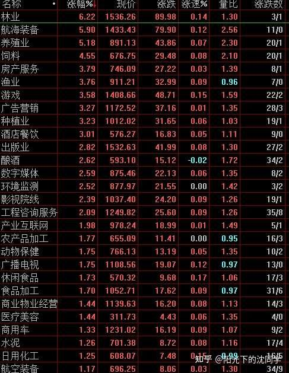
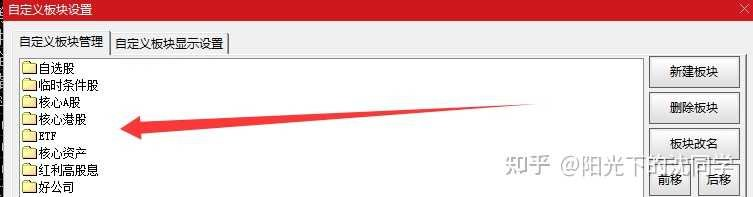
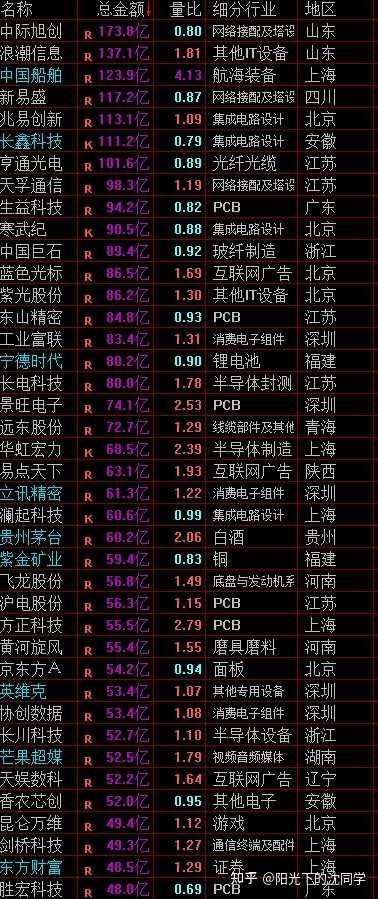
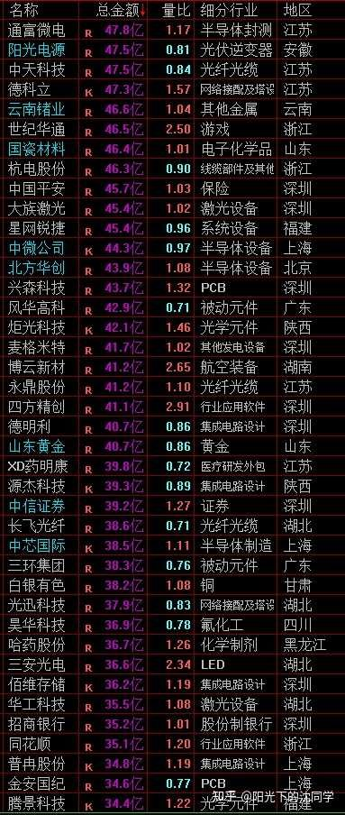
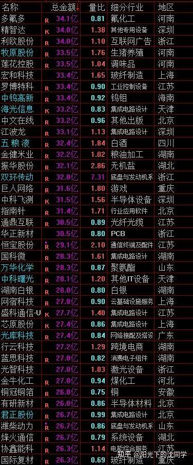

本文的核心逻辑在于‘存量博弈下的防御性配置’。作者指出当前市场处于成交量萎缩、增量资金匮乏的阶段，指数频繁冲高回落的本质是市场缺乏持续的接盘力量，导致大资金观望、中小单博弈。因此，作者提出的因果链是：成交量不足->市场缺乏上涨动力->频繁冲高回落->必须降低仓位（55%以下）以应对极端波动，通过‘证转银’保护本金，等待低位布局机会。
新的一周开始了，首先祝大家本周交易顺利，多多赚钱！
先把未来的投资重点梳理一遍，再慢慢分享各种心得
1，
指数方面最近经常冲高回落注【本质逻辑】多头在开盘或盘中尝试拉升，但因上方抛压沉重或缺乏后续买盘跟进，导致股价无法维持高位，最终被空头反扑。这反映了市场信心不足，买方力量脆弱。【新手提示】这是弱势行情的典型特征，切忌在盘中急涨时追高，否则极易成为当天的接盘侠。，稳不住，尤其是3950以上资金面依旧不好看
我们可以观察到中小单子比较多，大单比较少，说明大资金在观望
叠加成交量不够，说明行情增量资金很少，不好做，大部分个股动不了，应该多留现金，减少交易频率
频繁的冲高回落很伤士气，本来就行情不太好，还冲高回落，为数不多敢去加仓的资金也可能被折腾的多转空，这样也会上涨就更麻烦
市场综合成本来看还是在3950-3650区间，尽可能把握这个区间里面杀跌机会去做，不要追高，不要高开加仓
反而是高开低走，杀跌的时候把握机会，成本会更低，胜率更高
成交量不好，都没有那么多接盘力量，其实比的就是谁可以更有耐心买的更便宜
2，
细分领域机会各种电子材料类涨价比较多的，超预期的，可以关注
然后是AI产业链里面爆发力依旧很大，未来产品会一直放量的AI电源，液冷，电力设备，固态变压器这些也不错
还有苹果产业链，消费电子，AI眼镜，智能穿戴，折叠屏概念这些，也值得关注
天气影响的农林牧渔，一直到明年一季度，这个时间节点内，都是有机会的，很多游资早就在玩这些
现在短线机会不多，可以博弈的不多，除非来一波大跌，那很多低位好公司可以加仓，没有大跌的情况下，能做的东西是比较稀缺的
3，
综合以上情况，行情不好做，可以做的东西不多，总仓位尽可能低于55%
这个是底线，不是说55%总仓位安全，而是要尽可能低于55%，预留足够未来加仓空间才能更安全
短线账户如果没有看好的品种可以先不做，比如说以上热点，你看不懂，没什么把握，那肯定不能勉强做
参与短线博弈也要做好止损，不能错了死扛，这个很重要
如果你的性格做不到果断止损，你很清楚自己的特点，那你就不应该博弈短线，不然反而可能弄巧成拙
短线博弈的关键不是猜，不是有什么绝招100%赚钱，而是看好了一个机会，控制好仓位试一试，错了就止损
你做不到这样坦然去做短线，是一定会拧巴的，会做不好的
长线账户安心持有长期优质资产，低位的白马蓝筹，红利，美股，债券，黄金这些，都可以拿住，以后有大跌再加仓，稳住这些优质底仓即可，目前不需要快速去加仓
等待市场有更多机会再说
在不太好赚钱的时候拿得住钱，可以保持观望，不乱动，你就已经超越了大部分投资者

展示了各行业板块的涨跌幅与量比。量比接近1说明成交平淡，多空力量处于平衡状态，缺乏爆发性资金介入。新手应关注那些在缩量环境下仍能保持微涨的板块，这往往是资金抱团的避风港。
每天原创不易，读者朋友千万不要忘记点赞支持一下
正所谓先赞后看，腰缠万贯
大家可以先点一波赞，我们再继续慢慢聊
祝点赞的朋友福寿无量，天天开心
这种胜率不太高的行情肯定是难做的，最近很多朋友咨询都有提到赚钱很难，很多次尝试去做短线博弈都不是很顺
很正常，投资本来就是市场合力的游戏，是这个市场在发生各种博弈，不是说我们准备的够好就可以赚钱
尤其是短线，短线变化更大，影响因素更多
只要不是上升趋势+资金面非常好的行情，实际上胜率都不高，要勉强去加仓，去博弈，都容易亏钱
所以我个人比较建议这种时候，先多留一点现金仓位，减少短线博弈仓位，就算要做一些尝试，看好一些细分领域机会，也都不能仓位过重，不然止损也是不少钱
在仓位优化方面大家问的比较多是还是白马蓝筹股，红利优质资产，低位优质科技的这些配置策略
高位的抱团科技敢现在去博弈的投资者越来越少，最近美股市场没有什么波动，港股市场比较扑街，大家没有过去那么关心
都还是比较在意现在市场上可以做的位置比较低，未来上涨空间比较大的机会
但就是不能急，就算是目前低位科技，低位的白马蓝筹，红利这些，你仓位过高也麻烦，因为行情是会极致的，会超预期的发展
一定要留出足够的现金仓位，在未来行情非常极端的时候，肯定用的上，且那时候买到的筹码会非常非常便宜
我最近复盘很多自选股，在之前3000点以下熊市的时候，成交量很差的时候，都和现在比，股价差距很大
很多底部起来1-3倍的，就是普通的企业，他们可以上涨，完全是市场成交量起来了，水位推高了估值，企业没有什么大的变化，指数上涨了，成交量大了，很多股票就是会上涨挺多
等指数下去了，成交量下去了，他们肯定股价又跌回来
你留得住钱，就不要怕没有东西买
真到了行情非常低迷的时候，到处是可以买的便宜货，就算企业质量不算非常高，一样会因为足够便宜而有不少上涨空间
现在的行情就是越来越难赚钱，一定一定要拿得住钱，仓位优化好，这个比其他的策略更重要
感谢大家的付费咨询，让我感受到了自己知识的价值，也让我每天的分享更有激情
是大家的支持让我每天有更新复盘心得的动力
谢谢！
有什么投资策略想法，调仓换股思路，企业，行业研究这些都可以提前咨询，尽可能提前交流,这样价值更大
最适合新手投资者，上班族，股龄10年内投资者的投资策略分享
美股依旧在高位，不适合加仓
黄金波动比较大，底仓不需要担心，但定投机会暂时没有，还可以再等一等
债券非常看好，值得配置，是目前为数不多闲钱配置的安全方向
红利低位的个股可以配置，但分化比较大，很多红利个股一直上涨，现在没有那么高性价比，需要等后面跌下来机会
刚刚好最近整理自选股，把各种红利资产注【本质逻辑】指具有稳定现金流、高股息率的垄断型或龙头企业。其核心价值在于通过分红提供安全垫，抵御市场波动。【新手提示】红利股并非只涨不跌，其核心逻辑是‘长期持有+股息复投’，切忌将其作为短线炒作工具。整理了一遍，发现红利资产最稳健的还是要业务稳定，商业模型稳定的
如果规模不够大，或者业务竞争太激烈，其实是可能突然没办法分红的，红利的关键当然是股息率，但稳定性更重要
短期股息10%，但可能突然没有，或者大幅下降，这种其实都不如可以长期维持股息4%
做红利的大资金本来就是带着最少要拿5-8年以上的心态去配置的，短期股息复投看不见效果，相当于分红就是分自己钱，要除权的，这个从短线来讲没错，你拿了分红以后短期买卖还要交很多税，就是吃亏的
红利资产是越陈越香，短线反而吃亏
那么能长期活下来，业务稳定，现金流稳定，可以每年给到分红的垄断企业，央企，龙头企业，才是最好选择
当然也有一大批成长性堪忧的红利资产，股价起不来，因为确实成长性在不断下降，分红虽然也是稳健的，但如果一直下降下去，情况还是不乐观，股价就跑不赢指数
红利资产当然可以没有很大的成长性，但不能倒退，这个是两码事
目前红利资产五花八门，各行各业都有舍得分红，股息不错的企业，大家要尽可能选龙头，选有成长性的，业务垄断的是最好的，这种最不需要担心，也是最优质的红利资产
能买的便宜一点，股价+股息的复利是可以超过7%-15%的，买的没有那么便宜，熬一熬时间也复利可以达标
除非是买在高位，顶部，那确实会有一年大亏，要通过几年的熬估值，后面才能复利稳健，但你选择没有问题，长期还是可以通过股息复投来赚钱的
就像央企垄断的各种核心行业，都是能源，水电，路桥，港股，金融，通讯什么的，都是最核心，最基础的需求，他们如果都倒闭，完蛋，你认为其他企业还能好吗？
这些最基本的需求，可以有稳定的现金流，可以长期保持分红，把这些里面选几个龙头股，长期关注，慢慢配置红利资产，是很好的选择
再搭配美股，黄金，债券，搞一个自己资产的投资组合，长期复利会非常不错，跑赢95%以上基金经理
大家不要觉得这些资产慢，他们真的长期稳定，快的东西风险也大，很难把控
新手投资者最重要的是学习和总结经验，先可以让自己长期稳定复利，最起码5-8年以上你是赚钱的，你再来聊一夜暴富，聊各种高风险博弈，不然你最基本的复利，本金都没办法做大，一直在亏钱，聊那么多高风险，做不好的盈利模式，都是空中楼阁
投资是很实在的事情，保护好本金，长期赚钱，每年证转银注【本质逻辑】将证券账户内的资金转回银行卡。这是职业投资者在行情不明朗时的一种‘强制止盈/止损’手段，本质是切断资金与市场的联系，防止因心态失衡而进行非理性的频繁交易。【新手提示】对于新手，这是保护本金最有效的物理隔离手段，避免在震荡市中‘越做越亏’。，没有什么比这些重要
在这个基础上，你去专精短线技术，你去再深度学习，去挖掘更多机会，这个是可以的，并不是说完成了稳定复利就可以不思进取，这个看个人追求，但底线是要有的
如果你美股，黄金，债券，红利都赚不到钱，都玩不明白，那肯定说明基本功有大问题，这种情况下再去做其他决策是非常非常危险的
客观的评判自己的综合投资能力，然后来做投资选择，肯定是不会犯大错
我自己其实一直投资很谨慎，因为我觉得我还有很多可以学习的东西，每年都可以总结到很多错误，如果我不做好止损，不优化好持仓，不去做证转银，保护好自己本金，我亏起来一样很快
我很珍惜自己这些年因为运气好通过投资获得的一些收益，但我是非常清醒的认识到，我的投资经验还是不够的，肯定还有我没有想明白的东西，没有经历到那么完整的行情
如果我冒然去满仓，不重视风险，沾沾自喜，或者不做证转银，把所有资产都投入股市，而不是闲钱投资，我相信只需要1波熊市，我肯定会全部还回去
投资就是这样残酷，我已经见识过无数非常优秀的职业投资者，他们因为失误，上杠杆，或者就是一时自信，导致全盘皆输，大家可能接触的职业投资者不多，并不知道，对他们来说也要很难
投资是公平的，对每个人来说都是脆弱的
你不要觉得你赚了几个钱，你有一点经验，你就不会亏
其实亏起来都很快，只需要一个不小心，你马上就需要从头再来
我时刻保持着这种警觉和清醒，我也非常明白自己的综合投资能力还远远不够，所以我还在努力去复盘，去学习，到处去调研去提升自己
希望以后可以做的越来越好，也可以稳健下去，仓位控制一定会做好，且证转银出来的钱不会入市，不会让投资反噬和影响自己的生活
永远想到最坏的情况，想好应对策略
这样才能每天更轻松的去做交易，做了更多的后手，才能轻装上阵
总是满仓，全部身家都投入，那一定是压力大的，一定是蹑手蹑脚的
心态不好和仓位控制有很大关系，只不过很多投资者一直没有深刻去理解到仓位控制的重要，也没有对投资的风险有足够的敬畏之心
当然这也包括了大部分职业投资者，也都一样，容易飘，容易把自己赚到了一些收益，都认为是自己本事大，自己厉害
其实都有运气成分，投资不能说完完全全都是实力，很多时候是有点玄学，有点说不清楚的，因为行情很多次的开启，结束，也确实是莫名其妙的，这个当然可以事后接受，但确实没办法预判
我们没有人可以忽视运气和概率这个事实，那么我们又怎么能掉以轻心？
反正我个人是非常敬畏市场，我还有很多可以学习的东西，以前靠运气赚到的收获会非常珍惜，未来希望自己可以更多的靠硬实力去获得更多
有各种最新的调研情况，各种投资心得也会每天和大家聊聊，会及时更新，大家一起进步，一起学习
大家不需要认为我是老师什么的，我也是初学者，也还在继续摸索和总结中，也还是经常会犯错
共勉
---
大家有任何投资疑问，有什么想交流的都可以付费咨询，想单纯支持一下也可以
【在知乎上我的主页咨询即可，没有任何群，不搞私下小圈子】
家庭资产长期稳健配置方案分享，仓位优化，估值分析，行业分析，心态调整，各种投资学习技巧都可以咨询
大家的支持和尊重是我创作的最大动力
感恩大家每天的付费咨询和打赏，感谢大家对知识的尊重，感谢大家对我的支持
欢迎提问
适合职业投资者，10年以上经验老股民，基本功极其扎实投资者的实战分享
继续聊实战
短期账户依旧没有加仓
长期账户在优化完之后也暂时变化不大，比较关注港股12月之前的科技博弈机会，然后是权重杀跌的错杀买入机会
整体来看，这段时间港股比较扑街，买点比A股，美股更多
其实三个市场各有特点，也都有长期值得关注的好公司，关键是怎么把握他们杀跌的时候，错杀的时候买入
按照我自己这些年实战经验来看，美股持仓体验更稳健，更安心，回撤不大，拉回来更快
A股流动性非常好，波段多，做t机会多，成本好控制，总能来来回回震荡，有空间，而且牛市炒作疯狂，短期拉升力度大于美股，当然跌起来也极致
港股流动性差，爆发力不差，但因为流动性影响波动没有那么大，属于要不就一直低迷，一旦爆发了也拉升很快，节奏和持仓体验不如美股
对长线职业投资者来说三个市场没有什么很大优劣，因为都是盯着优质资产去布局，都是等他们杀跌的时候买入
但对短线职业投资者来说情况完全不一样，港股很难做短线，短线投资者做港股会很难受，你很难有做t，做波段空间，如果性格急一点，我认为是没办法接受港股市场这种走势特点的
普通投资者，新手投资者肯定是美股最好，因为不需要费心，长期复利稳定，买错了也熬一熬马上解套，马上赚钱，买的时机好一点复利大幅提升
美股的回报和奖励很快，平时持仓体验也不错，就是你越不懂投资，越不会选股，就越会适合投资美股
你喜欢做短线，喜欢波动，喜欢刺激，而且你有基本功，你应该喜欢A股更多
价值投资，长线投资者，其实都差不多，反正是配置优质资产，暂时不动就不动，极端情况下加一点，最终好东西都会涨起来，不管是什么市场，这个底层逻辑是不变的
最近一段时间加班加点的整理自选股
目前已经整理的七七八八了
我自己目前自选股很简约，过去很复杂，现在是一年比一年简单
就像下面这样的一个分类

作者的自选股分类逻辑图。通过将资产划分为核心、ETF、红利等类别，本质是建立‘资产配置防火墙’。新手应学习这种分类法，将‘长期配置’与‘短线博弈’资金彻底分开，避免混淆操作周期。
我过去做自选股分类非常多，直接可能都看不过来
现在就上面这些分类
自选股就是平时会关注的，可能会短期交易的
核心A股是筛选出来认为A股市场最好的股票
核心港股是筛选出来认为港股市场最好的股票
ETF是从所有ETF里面筛选出来目前成分股最好的ETF
核心资产就是私人珍藏，是我自己最熟悉，调研比较多，了解最清晰的股票
红利高股息顾名思义，就是红利资产，都是现金流比较好，分红比较稳健的股票
好公司就是认为企业还可以，但没有那么核心，但可以关注一下
今年这种自选股分类整理以后更加实用
平时看盘就看自选股里面的变化，想找投资机会，就在核心资产，核心港股，核心A股里面看看有没有便宜的
有个股不确定性的就在ETF里面寻找机会，今年ETF是重点做了筛选，以后会越来越重视ETF的布局
想稳健一点肯定是先在红利高股息里面做挑选
好公司里面的股票大部分都不会买，平时也不会太关注，也就是作为一个分类，最起码也会遇见了会知道我有一个标记，一个分类，这个企业不是一文不值，有时候这种目前看起来中规中矩的企业，以后突然变好了，或者现在我不够理解的企业，以后有了调研，有了渠道以后，又可以看懂投资机会了，暂时觉得没有大问题，但确实不够了解，不会买的就放这里面
我记得我以前做自选股分类非常非常多，现在想一想有点多余，很多股票本来就是不会买的，也没有那么了解的，集中放到一个分类里面就可以了
这样整理一下我觉得清爽多了，也算是给自己的投资做减法，不搞的那么复杂，也可以提升复盘效率
把最新的自选股筛选和分类思路分享给大家
大家有时间也可以自己去做自选股的一个分类工作，可以帮助你更好的看盘，复盘，研究企业
最起码ETF，核心最看好的企业，这两个要分出来，不然有时候想投资什么，一时半会都不知道去哪找标的，手忙脚乱的就容易出错
时间有限，今天先聊这么多，后面有时间再详细聊具体的自选股筛选思路，聊聊有哪些不一样的感悟



---风险提示：股市有风险，入市须谨慎
今天是坚持写复盘笔记的第1516天【每日打卡】
下面是我自己多年来的一些重要的心得感悟，分享给大家，会不定期增加内容
1，
长期投资成功的关键是稳定的情绪和沉稳的性格，这些比过人的天赋更重要
2，
最终我们穷其一生获得的一切经验、知识和所有财富都需要转化为自身的品德修养，不然获得越多失去越多
自身的修养是留住各种财富最好的容器，富裕一时不难，富裕一生不易
珍惜获得的一切，保持初心、慈善、知足，让自己的德行和财富共同成长，才能方得始终
3，
古之成大事者，不惟有超世之才，亦必有坚忍不拔之志
想成为优秀的投资者一定要持之以恒，不断学习，反思，总结，在投资中获得的各种经验最终都会成为你财务自由的砖瓦
4，
再高的智商也一样会被情绪一瞬间冲垮
大部分的亏损都来源于投资者的冲动和情绪化交易，学会控制自己的情绪和心态才能长期稳定的复利
5，
富在术数，不在劳身
一定要多思考，任何时候想清楚了再交易，漫无目的的交易，只会多做多错
6，
利在势居，不在力耕
投资赚钱主要靠把握时机，没有机会就休息，多留现金
做可以让自己心安的投资，便是对于你来说最好的盈利模式
7，
谨记：贪念起，万念俱灰！
控制住了风险，利润会随之而来
富贵险中求，也在险中丢
求时十之一，丢时十之九
仓位情况【不推荐模仿】
短线博弈仓位：0%
长线+短线总仓位尽可能低于55%，这样更符合当前行情的风险程度
长线资产配置目前个人分散持有：各种债券ETF+各种核心红利ETF+美股ETF+黄金+优质REITS+长期看好的优质企业+核心ETF
---
美，港，A股长线+短线所有股票持仓投资方向配置比例参考：
金融：10%
消费：31%
生物医药：13%
AI产业链：7%
能源，动力：9%
高端制造：25%
周期：5%
【每3-6个月更新一次】
最新更新时间2026年9月
祝大家在如梦如幻的行情里清醒而自由
每周都要和读者朋友声明一遍：
有任何问题都可以在知乎上付费咨询，什么都可以问，知无不言
我只在知乎分享，不卖课，没有其他任何公众号，群，星球，谨防上当受骗！
其他平台很多都是别人伪造的号，不会私底下叫你们加什么小圈子，从来不搞这些
任何私下联系你们说认识我的人，想和你套近乎或给你推荐什么东西，或拉你进什么小群，这些都是骗子，都千万不要相信
不要去理睬网上问你股票，关心你投资有没有赚钱的人，都肯定不怀好意，自己要有辨别能力
我是不会私下联系大家的，可能有伪造我头像，网名的人做这种事，或者伪造成为我朋友，认识我的人做这种事，大家自己要看清楚
每天原创不易，谢谢大家各种支持！
全文逻辑总结：当前A股处于‘无量震荡’的存量博弈期，核心矛盾是‘缺乏增量资金’。作者建议新手采取‘防御性策略’：1. 严控仓位（低于55%），留足现金以应对极端杀跌；2. 放弃短线频繁博弈，转而通过红利资产或优质ETF进行长期配置；3. 建立明确的自选股分类体系，避免盲目跟风。新手避坑法则：不要在冲高时追涨，不要在看不懂热点时强行参与，必须学会‘证转银’以保护本金，投资的本质是概率与心态的博弈，而非简单的赌涨跌。

{kind=link}
![[图片]](https://picx.zhimg.com/v2-a6d59018d7e6840c2fd30ddcb58d4b94_qhd.jpg?source=1d2f5c51){kind=link}
{kind=link}
{kind=link}
{kind=link}
{kind=link}
感谢老沈分享自选股的筛选心得，已经严肃收藏，会反复阅读
我自己自选股一直没有很好分类，都集中在一坨，不知道有没有和我一样的
这样看起来是不怎么方便，我也要行动起来，好好分类一些，我目前设想的是分类成为熟悉，了解，看好但不熟悉这三类，会比较适合我，我是能力圈在生物医药，其他真的不是很懂，但我喜欢炒股，喜欢投资，让我生活挺开心的
说实话，中年人哪是天生就喜欢炒股，只是突然发现退休前攒够养老钱这事，靠死工资基本没戏
身边的门一扇扇关了，给我们的机会越来越少，投资还算是为数不多的机会
开店没本钱，副业拉不下脸，除了本职工作啥也不会，人总得有个盼头吧，最密切每天有个事情做，学点东西，还算过得去
期待老沈后续分享更多关于自选股的筛选思路。最近考古20年左右文章，老沈可能差不多观察接近1000支股票，23年、24年分享的自选股大概300多支。今年按这个意思更精简了。删繁就简做减法，越来越做核心的股票了[赞]
一周笔记
1、 行情不好，宜苟，总仓位55%以内为佳。
2、 美股依旧在高位，不适合加仓
3、 黄金波动比较大，定投机会暂时没有，还可以再等一等
4、 债券非常看好，值得配置
5、 红利低位的个股可以配置，但分化比较大，需要等后面跌下来机会
除了定投，其他的都苟着，等下一波机会。
哈哈哈哈哈哈哈哈 无聊行情就是这样的了，先苟住………………
沈大真的在能说的最大范围内都说了，就差说自己持股了[捂脸]，这份心真得珍惜[感谢][感谢]
如果仓位控制好一点，时间拉长一点，你的复利会到10%以上的，老沈的策略长期无敌，但需要时间
我突然发现，你的游戏没了[捂脸]
0